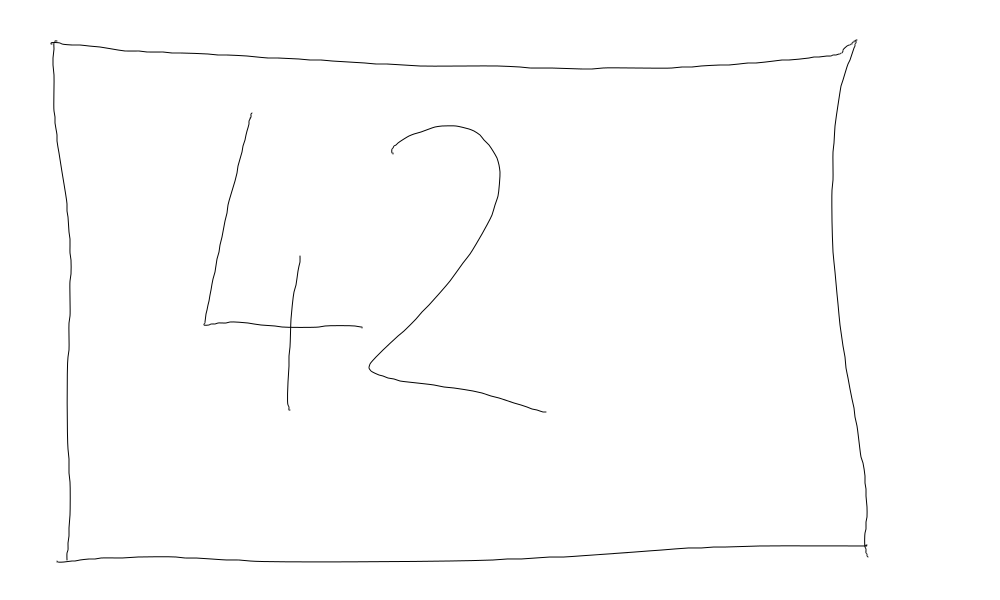

Exercise: Arithmetic Expression Interpreter¶
Motivation¶
Create an Abstract Syntax Tree (AST), like compilers do (albeit much more sophisticated), to represent and evaluate expressions.
Type |
Expression |
Object structure |
|---|---|---|
Literal |
|
 |
Arithmetic expression tree |
|

|
{kind=link}
Expression Interface¶
For simplicity, all expressions evaluate to integer types.

Literals¶
In programming languages, a literal is a value that is written as-is, such as
42
In itself, a literal does not make much sense. It is used in
combinatin with operators to form larger expressions, such as 42 +
5. A literal is an expression, though, because it evaluates to a
value.
#include <gtest/gtest.h>
#include <expression.h>
TEST(interpreter_suite, literal)
{
Literal le(42);
Expression* e = ≤ // <--- Literal *is-a* Expression
ASSERT_EQ(e->evaluate(), 42); // <--- ... and is evaluated as such
}
|

|
Arithmetic (Binary) Expressions¶
Binary arithmetic expressions come next:
+,-,*,/Here’s a test, and a class diagram for
Addition#include <gtest/gtest.h> #include <expression.h> TEST(interpreter_suite, addition) { Literal lhs(1); Expression& e_lhs = lhs; Literal rhs(2); Expression& e_rhs = rhs; Addition add(e_lhs, e_rhs); // <--- adds two *Expression* values (not only Literals) Expression& e_add = add; // <--- Addition *is-a* Expression ASSERT_EQ(e_add.evaluate(), 3); // <--- ... and is evaluated as such }

Subtraction/trainings/material/soup/cxx-code/design-patterns-interpreter/tests/interpreter-suite-subtraction.cpp¶#include <gtest/gtest.h> #include <expression.h> TEST(interpreter_suite, subtraction) { Literal lhs(1); Expression& e_lhs = lhs; Literal rhs(2); Expression& e_rhs = rhs; Subtraction sub(e_lhs, e_rhs); Expression& e_sub = sub; ASSERT_EQ(e_sub.evaluate(), -1); }
Multiplication/trainings/material/soup/cxx-code/design-patterns-interpreter/tests/interpreter-suite-multiplication.cpp¶#include <gtest/gtest.h> #include <expression.h> TEST(interpreter_suite, multiplication) { Literal lhs(2); Expression& e_lhs = lhs; Literal rhs(3); Expression& e_rhs = rhs; Multiplication mul(e_lhs, e_rhs); Expression& e_mul = mul; ASSERT_EQ(e_mul.evaluate(), 6); }
Division#include <gtest/gtest.h> #include <expression.h> TEST(interpreter_suite, division) { Literal lhs(3); Expression& e_lhs = lhs; Literal rhs(2); Expression& e_rhs = rhs; Division div(e_lhs, e_rhs); Expression& e_div = div; ASSERT_EQ(e_div.evaluate(), 1); }
Check: Combined Arithmetic Expressions¶
Literal, and all of the arithemetic operators, are-a
Expression. The arithemetic operators use-two Expression
objects, so it should be possible to create expression trees like,
Test |
Expression |
Tree |
|---|---|---|
/trainings/material/soup/cxx-code/design-patterns-interpreter/tests/interpreter-suite-combined-arith.cpp¶#include <gtest/gtest.h>
#include <expression.h>
TEST(interpreter_suite, combined_arith)
{
Literal l7(7);
Literal l3(3);
Literal l1(1);
Addition a_7_plus_3(l7, l3);
Subtraction s_3_minus_1(l3, l1);
Multiplication total(a_7_plus_3, s_3_minus_1);
ASSERT_EQ(total.evaluate(), 20);
}
|
|
|
And Variables?¶
Variables in programming languages live in a context - usually global or local scope (with their own lookup rules). Assignment to a variable drops a value into that variable’s context/scope.
For example, the following C function carries a local variable,
i. Assignment to i write the assigned value into the memory
location (the address) of i. The context of i is said to be
the stack frame of the function() invocation.
void function()
{
int i;
i = 42;
}
No Uninitialized Variables!!¶
Lets say, our variable are always initialized - without ever assigning
to them, they have a defined value: 0.
/trainings/material/soup/cxx-code/design-patterns-interpreter/tests/interpreter-suite-variable-not-set.cpp¶#include <gtest/gtest.h>
#include <expression.h>
TEST(interpreter_suite, variable_not_set)
{
Context context; // <--- e.g. local or global scope (if we had functions)
Variable v(context, "i"); // <--- v lives in context, under the name "i"
ASSERT_EQ(v.evaluate(), 0); // <--- v has never been assigned to -> default value 0
}
Assigning To Variables¶
In the C analogy above, assigning to i write the assigned value
into the variable’s context/scope. Additionally, we implement C’s
“assignment has a value” semantics,
int assignment_value;
int i;
assignment_value = i = 42;
I.e., the assignment i = 42 is an expression whose value is
42.
/trainings/material/soup/cxx-code/design-patterns-interpreter/tests/interpreter-suite-variable-assignment.cpp¶#include <gtest/gtest.h>
#include <expression.h>
TEST(interpreter_suite, variable_assignment)
{
Context context;
Variable v(context, "i");
Literal l(42);
Assignment ass(v, l); // <--- Assignment object created (but not yet evaluated)
ASSERT_EQ(ass.evaluate(), 42); // <--- Assignment evaluation: "i = 42" has value 42 (as in C)
ASSERT_EQ(context.get("i"), 42); // <--- variable has made it into context
ASSERT_EQ(v.evaluate(), 42); // <--- variable now has a defined value
}
Using Variables As Expressions¶
Obviously, in programming languages, variables can be used as expressions themselves.
int i = 42;
int j = i; // <--- i used as expression whose value is assigned to j
/trainings/material/soup/cxx-code/design-patterns-interpreter/tests/interpreter-suite-variable-used-as-expression.cpp¶#include <gtest/gtest.h>
#include <expression.h>
TEST(interpreter_suite, variable_used_as_expression)
{
Context context;
Variable v1(context, "i");
Literal l(42);
Assignment ass_v1(v1, l);
ass_v1.evaluate(); // <--- "i = 42" (not consuming assignment as expression)
Variable v2(context, "j");
Assignment ass_v2(v2, v1);
ass_v2.evaluate(); // <--- "i = j"
ASSERT_EQ(v2.evaluate(), 42);
}